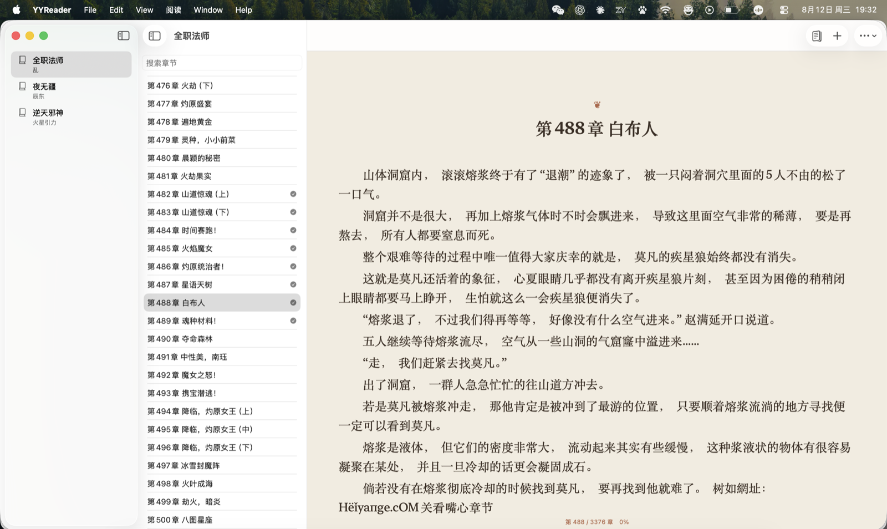

原生、安静、适合长时间阅读的
跨平台网络小说阅读器
只需粘贴章节网页，YYReader 会智能识别书籍、目录与正文。
正文由 macOS (SwiftUI) 与 Windows (WinUI 3) 原生排版引擎渲染，告别网页弹窗与卡顿。

专为阅读而生的四大基石
抛弃沉重的 Electron 和充满广告的 Web 套壳，重回安静、纯粹、丝滑的沉浸阅读体验。
全原生排版渲染
macOS 基于 SwiftUI 原生 ScrollView + LazyVStack + Text，Windows 基于 WinUI 3 原生文本控件。正文绝对不由 WebView 渲染，内存占用极低，滚动无阻尼滞涩。
智能正文提取与降噪
内置专用与通用小说解析器，基于语义化标签、JSON-LD 与文本密度评分，自动剔除网页脚本、分页广告、上下章提示；自动合并网站切割的章节分页。
连续阅读与 3 章预取
支持段落锚点记忆与平滑跨章无缝阅读。后台以低优先级串行预取后续最多 3 章，具备 Single-Flight 防重防打扰机制，翻页零等待，无需时刻忍受网络缓冲。
本地优先与离线缓存
书籍元数据、目录与已读正文完全持久化在本地（SwiftData / SQLite），支持按需单章或整本批量下载。断网也能随时打开阅读，数据完全归你所有。
为 macOS 与 Windows 量身定制
保留各自操作系统的设计精髓与交互习惯，没有跨平台框架的异样感。
三栏式书架与目录结构
经典 macOS 原生 NavigationSplitView 三栏布局，左侧书架列表一目了然，中间完整章节目录支持即时搜索与过滤，右侧纯净原生正文预览。
⌘L 快速添加章节 URL
在线体验 YYReader 排版引擎
试着调节下方的主题、字体、字号与正文宽度，感受舒适且不累眼的排版细节。
私密、可靠的
文件夹双向同步
不强求专有云服务器，不绑定 iCloud 或商业账号。只需在 Mac 与 Windows 上指定任意共同可访问的文件夹（iCloud Drive、Dropbox、OneDrive、Syncthing 或 NAS），YYReader 就能优雅协作。
单向写入，互相合并
Mac 端仅写入 mac.json，Windows 端仅写入 windows.json。互不覆盖对端文件，从根源消除多端写入冲突。
阅读位置单向推进
多端阅读时，仅接受更后章节或更后段落索引，防止因设备时间差导致阅读进度被意外倒退。
离线韧性与隐私安全
云盘离线或网络波动时，绝不清空本地书架。同步文件仅包含书名与进度索引，不上传正文与登录凭证。
mac.json
windows.json
windows.json
mac.json
指尖起舞的高效快捷键
脱离鼠标，让双手始终停留在键盘上，享受纯粹连贯的阅读流动。
快速添加小说网页
唤起 URL 输入弹窗，自动从剪贴板预填网址，一键开始解析。
上一章 / 下一章
迅速跳跃切换章节，自动平滑重置滚动位置至段落开头。
小步平滑微滚
细腻的逐行平滑滚动，保持视线聚焦在当前文字行。
整页舒适翻屏
按视口高度黄金比例（88% 步长）翻页，自动保留上下文衔接行。
下载 YYReader
当前最新版本 v1.2.3 • 绿色纯净 • 开箱即用
YYReader for macOS
Apple 芯片 (arm64)YYReader-1.2.3-arm64.dmg
216d41cdbc2237e188c2606120dc60ebe31fba666e65ad552a9bac7f4b0eb4e7
YYReader for Windows
64 位系统 (x64)YYReader-Setup-x64-1.2.3.exe
317DB5BF7A8474B1BAE6CA0B967FDC2EAC62F57D25E005DC24A3D19E777456B4
常见问题
关于站点兼容性、验证拦截以及数据安全的相关解答。
YYReader 为 qidiy.com（启迪小说） 提供了专用适配器（支持双页分页无缝合并与噪声滤除）；对于其他绝大多数主流小说站点，应用内置了基于 JSON-LD、OpenGraph、正文语义容器优先级和中文标点密度的通用解析引擎。只要网页结构包含常规章节正文与前后章导航，均可自动解析。
YYReader 优先采用轻量快速的 URLSession / HttpClient 下载静态页面；若目标站点触发了 Cloudflare 质询或前端 JS 渲染，应用会自动唤起原生 WebKit (macOS) 或 WebView2 (Windows) 浏览器组件供用户完成一次性人机验证，随后将 Cookie 和渲染后的 DOM 传回原生阅读器，正文绝不会直接嵌入 WebView 浏览。
不需要。YYReader 的同步是完全异步且幂等的。当你在离线状态下阅读时，进度会先保存在本地；一旦连接到网络或共享文件夹重新就绪，应用会自动比对 mac.json 与 windows.json 的文件签名，并以单向向后推进的规则安全合并进度，绝不会因网络中断导致数据丢失或覆盖。
绝对不会。YYReader 是一款纯单机本地优先的阅读工具，不架设任何中心服务器，不收集用户阅读记录，也不在应用内分发任何版权正文。所有内容仅由用户自行输入 URL 从源站获取并缓存在用户本机。